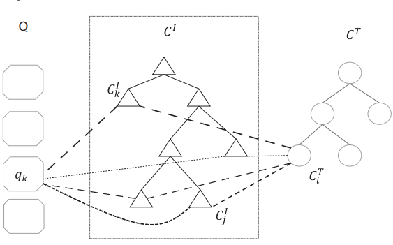

Few Shot Learning#
Few-shot learning is inspired by the human ability to learn new concepts with minimal examples. Humans, like babies, can quickly grasp key features of an object, such as an apple’s shape, color, and texture, from a single observation. This allows them to recognize similar objects, even under different conditions, without needing extensive examples.
While humans easily learn from a few examples, most machine learning models, especially deep learning, require large datasets. To address this, researchers are developing few-shot learning, which mimics human cognitive abilities by enabling models to generalize from small samples. This approach, related to transfer learning, includes methods like zero-shot, one-shot learning, and Bayesian program learning.
N-way-K-shot classification#
N-way: Refers to the number of distinct classes the model must classify.
K-shot: Represents the number of labeled examples provided for each class during training.
Training set: every class in the training set has many samples, and it is big enough for training a deep neural network.
Support Set: For each episode, a support set is provided, containing \( ùêæ \) labeled examples for each of the \(ùëÅ\) classes. The model uses these examples to learn a representation of each class. For example, in a 3-way-2-shot task, the support set would consist of 3 classes, with 2 examples for each class. When \(ùêæ=1\), it‚Äôs termed one-shot learning; when \(ùêæ=0\), it‚Äôs zero-shot learning, which often requires specialized approaches since no examples are given.
Query Set: After learning from the support set, the model is tested on a query set, which contains new, unlabeled examples from the same \(ùëÅ\) classes. The model must predict the correct class for each example in the query set.
Omniglot Dataset#
The Omniglot data set was proposed by Lake et al. and consists of:
1623 characters from 50 different alphabets each character has 20 instances each image is a grayscale image each image is 105 x 105 pixels Note: Recent advances in FSL have achieved high accuracies for the Omniglot dataset (e.g. MAML XX %). Therefore, new datasets, such as the meta-dataset have been introduced. However, the Omniglot dataset is sufficient for the purpose of this tutorial.
In contrast to the MNIST dataset, which is commonly used for image classification in the traditional Supervised Learning setting, the Omniglot dataset has many different classes (MNIST only has 10 classes) but only 20 instances of each character (MNIST contains many instances for each character).
FSL by Shusen Wang#
Support set#
Training Set#
Prediction per Ways and Shots#
Similarity Query and Support Set#
Each query and support set sample is compared in feature space using a similarity function.
Miniproject: Complete few shot learning#
Zero-Shot Learning#
Zero-shot learning involves a system handling test samples from classes not present in the training data. Unlike traditional learning, zero-shot learning relies on “semantic features” to bridge knowledge from known classes to novel ones, enabling transfer learning.
Zero-shot learning involves mapping input features \( X \) to a semantic feature space \( F \) rather than directly to labels \( Y \). The knowledge base \( K = \{(f_1, y_1), \dots, (f_k, y_k)\} \) links these semantic features to labels, allowing the model to identify novel classes by matching new examples to the most similar known classes. Semantic features, explicit or implicit, enable this mapping, and methods like word embeddings are crucial for capturing similarities between classes.
Algorithms for Zero-Shot Learning#
Classification and Regression
Zero-shot learning algorithms are categorized into two main approaches: classification/regression and energy function ranking. In classification/regression, the process involves two phases: \( X \rightarrow F \) and \( F \rightarrow Y \), where \( F \) represents the semantic feature space bridging different classes. The first phase translates training labels into semantic features \( F \) using a knowledge base, and the second phase involves fitting classifiers or regression models based on these features. During testing, the input data \( x \) is mapped to semantic features using the learned models, and the most similar class from the knowledge base is identified.
An example is the “bridging classifier” presented by Shen et al. (2006b), which classifies queries into new categories even with few or no training data. This algorithm uses a two-phase approach where Phase I trains intermediate classifiers on Web data, mapping text documents to intermediate categories. Phase II maps these intermediate categories to target domain labels using the Bayes rule:

where \( p(C_T^i \mid q) \) is the probability of query \( q \) belonging to class \( C_T^i \). The class with the maximum likelihood is chosen using:
This method has been successfully applied in search engines and advertisement systems. The figure below illustrates the mapping process from queries to target classes through intermediate classes.
A Simple Approach To Zero-Shot Learning#
Describe classes in terms of attributes
The list of attributes is called the signature
Given a new class with no training examples, classify new examples
Zero-Shot Learning In Two Parts#
Attribute Learning (Training)
“Attribute Based Prediction” (Inference)
A Very Simple Zero-Shot Learning Model#
see : Philip H. S. Torr, et. al, “An embarrassingly simple approach to zero-shot learning”
Train a linear model (e.g. logistic regression) for each of the attributes
Create a second model to predict classes based on the attributes
This is known as Directed Attribute Prediction (DAP)
The General Form Of A Linear Layer
New type of ZSL:
Inference or prediction is given by: